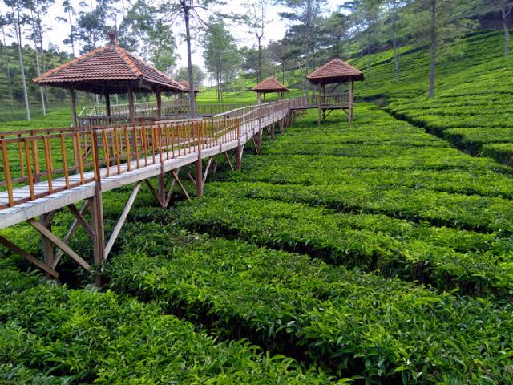

Mengenal lebih dekat Brebes selatan

Secara historis, nama Bumiayu bermula dari kisah Raja Mataram (Adipati Anom/Sunan Amangkurat II) yang melintas di daerah tersebut pada akhir abad ke-17. Ia terkesan dengan keramahan penduduk lokal serta pesona paras para wanitanya yang ayu (cantik), sehingga menyebut kawasan itu sebagai "bumine wong ayu" (tanah orang-orang cantik).
Kebun Teh
Penghasil sayur mayur
Wisata